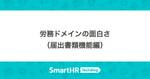

SmartHR Tech Blog
https://tech.smarthr.jp/
SmartHR 開発者ブログ
フィード

jQueryを使ったレガシー画面のReact化
SmartHR Tech Blog
このエントリは、SmartHR Advent Calendar 2024 シリーズ2の10日目の記事です。 こんにちは！SmartHRで基本機能の開発をしているプロダクトエンジニアのyamakeeeeeeeeenです。この記事では、基本機能のレガシー画面のリプレイスプロジェクトについてご紹介します。 基本機能の技術スタックとレガシー画面の現状 SmartHRは2015年にサービスをローンチ時、フロントエンドにjQuery、バックエンドにRuby on Railsを採用して開発されました。その後、2017年頃からReactが導入され、新機能の開発では主にReactが利用されています。 現在、基本…
1日前

労務ドメインの面白さ（届出書類機能編） 1
1
SmartHR Tech Blog
このエントリは、SmartHR Advent Calendar 2024 シリーズ2の6日目の記事です。 こんにちは、SmartHR届出書類機能でプロダクトエンジニアをしているqwyngです。 この記事では、SmartHRの届出書類機能におけるドメイン知識の話を書きます。この記事を読んだ方が、SmartHRのドメインに興味を持っていただけると幸いです。 SmartHR届出書類機能の概要 SmartHRの届出書類機能は、会社や従業員の情報を入力として受け取り、行政手続きに関する書類のPDFを出力したり、電子申請のxmlファイルを出力し電子申請するシステムです。 届出書類機能の図 最終的には行政に…
5日前
脱・東京一極集中とまで行かずとも、来年はもっと日本各地でミートアップできたらいいなという話 1
SmartHR Tech Blog
このエントリは、SmartHR Advent Calendar 2024 シリーズ2の5日目の記事です。 こんにちは！SmartHRのnansekiです。 先ほど松江から東京に帰ってきて、急いでこの記事を仕上げています。早速余談ですが、松江では「Ruby bizグランプリ2024」の表彰式に参加してきまして、SmartHRは「特別賞」を受賞しました！ 素敵な企業・サービスがエントリーする中で特別賞をいただけたことを誇らしく思います。いただいた賞金を有意義に使いたいところです。 本題に戻りまして、この記事では「2025年は日本各地でももっとミートアップをやっていきたい」という話をします。フルリモ…
6日前
開発プロセスの「型化」による開発効率の向上 1
SmartHR Tech Blog
このエントリは、SmartHR Advent Calendar 2024 シリーズ1の4日目の記事です。 こんにちは！SmartHRでプロダクトエンジニアをしている原田です！ 私が所属している共通データ基盤ユニットでは今年、従業員情報への項目追加に取り組み、4月に等級、9月に職種の追加を行いました。これらの項目はSmartHRの文書配布機能やキャリア台帳機能を始めとした様々な機能から求められていたものでした。 従業員情報に新しく「等級」の項目を追加しました｜お知らせ 従業員情報に新しく「職種」の項目を追加しました｜お知らせ 一見、項目を追加するだけなら簡単そうに思えるかもしれません。しかし、実…
7日前

1歳6ヶ月に達する日を計算する過程で知るRailsの日付計算の罠
SmartHR Tech Blog
このエントリは、SmartHR Advent Calendar 2024 シリーズ2の3日目の記事です。 こんにちは、SmartHR基本機能でプロダクトエンジニアをしているyonoです。今日はタイトルにある通り、プロダクト開発で遭遇したRailsの日付計算のちょっとした罠についてお伝えしたいと思います。 前提: 育児休業について SmartHR基本機能が提供する機能の一つとして、育児休業給付金を申請する機能があります。育児休業を取り扱うにあたって、育児休業をいつまで取得できるか、すなわち育児休業終了日を計算する必要があります。育児休業は原則、子が1歳に達する日まで取得できますが、最大で2歳に達…
9日前
登録社数60,000社を突破したスケールアップ企業の「品質保証」のこれから 〜新VPoE・マネージャー対談〜
SmartHR Tech Blog
2024年11月現在、SmartHRの登録社数 *1は60,000社を突破しています。 またマルチプロダクト戦略のもと、常に複数プロダクトが開発・提供・利用されています。 この状況で求められる「プロダクト品質」とはどういったものでしょうか？そして、品質を支える組織に求められる活動はどういったものでしょうか？ 品質保証部のマネージャー（Acting *2）として2024年9月に入社したtarappoさんと、2025年1月よりVP of Engineeringに就任するsaitorycさんに、話を聞きました。インタビュアーは、現VP of Engineeringのmorizumiさんです。 tar…
12日前
エンジニアが挑戦できる、SmartHRのアクセシビリティへの取り組み
SmartHR Tech Blog
こんにちは！SmartHRプロダクトエンジニアのhimiです。 スキル管理機能の開発チームに所属しており、普段の業務では主にフロントエンドの実装を担当しています。 先日アクセシビリティ本部のメンバーのサポートを受けながらWCAG達成基準の検証を実施したので、その様子や試験の結果を紹介します！ SmartHRならではのエンジニアがスペシャリストのサポートを受けながらアクセシビリティに積極的に取り組める環境を知っていただければ幸いです。 WCAGとは WCAG（Web Content Accessibility Guidelines）はWebアクセシビリティを実現するための国際基準です。 検証を行…
14日前
第8回SmartHR LT大会を開催しました!
SmartHR Tech Blog
こんにちは！ SmartHRで新規企画の開発を担当していますchanMisaです。もうそろそろ年末の足音が聞こえてきそうですね。 この記事では、2024年10月18日に開催された第8回LT大会について紹介したいと思います。 SmartHR LT大会について SmartHR LT大会は有志のプロダクトエンジニアがDevRelとともに企画・運営している社内イベントです。 プロダクトエンジニアの中から11名の登壇者を募り5分間のLightning Talks(LT)を行います。 登壇者はプロダクトエンジニアに限定していますが、当日は職種によらず社員であれば聴講可能です。 配信もしており、現地参加が難…
14日前
SmartHR 品質保証部 タレントマネジメントユニットの紹介 〜開発チームが品質保証できる状態づくり〜
SmartHR Tech Blog
こんにちは！QAエンジニアのhigashiです。 品質保証部連載第5弾では、タレントマネジメントユニット（以下タレマネユニット）の紹介や現在ユニットで取り組んでいることを紹介します。 タレマネユニットについて タレマネユニットはその名の通り、タレントマネジメント領域のプロダクト（以下タレマネプロダクト）を担当しているユニットです。 2024年11月時点で担当しているプロダクトは以下の10個です。 採用管理 人事評価 配置シミュレーション キャリア台帳 スキル管理 学習管理 従業員サーベイ 分析レポート HRアナリティクス 組織図 第1弾のブログで触れたように、品質保証部ではチームやプロダクトの…
15日前
「聞けそうで聞けなかった新規プロダクト/機能開発のウラ側」を開催しました！（Helpfeel・アイザック・SmartHR共催）
SmartHR Tech Blog
こんにちは！SmartHRのnansekiです。 先日、Helpfeel社・アイザック社と合同で、イベント「聞けそうで聞けなかった新規プロダクト/機能開発のウラ側」を開催しました。このイベントは、複数プロダクトを展開する企業の「新規開発」に焦点をあて、さまざまなシチュエーションにおけるプロダクト作りの苦悩・工夫をシェアしあうことで、いま直面しているもしくはこれから直面するであろう課題を解決するヒントを得ることを目的に開催されました。 nota.connpass.com 各社の事例共有 前半は、各社から自社の「新規開発」の事例や苦悩が共有されました。 公開済の資料に関してはURLを記載します。よ…
15日前
アプリストアを支えるパートナー専用サイトの構想と技術選定
SmartHR Tech Blog
こんにちは、プロダクトエンジニアのa2cとutakahaです。 SmartHR PlusというSmartHRのアプリストアの開発をしています。 このアプリストアは、SmartHRをもっと便利にご利用いただきたいというコンセプトで現在約50のアプリを掲載しています。 我々のチームでは、SmartHR Plusにアプリを掲載していただいているパートナーの利便性向上や価値提供を目的に、『SmartHR Plus For Partners β版』というパートナー専用サイトの提供準備を進めています（乞うご期待！）。 この記事では、SmartHR Plus For Partners β版を開発する背景と技…
16日前
Slackワークフローでセキュリティ関連の承認を行えるようにしました
SmartHR Tech Blog
こんにちは！コーポレートエンジニアのいっち〜(@icchi-)と申します。 前職ではプロダクトエンジニアとして働いていましたが、SmartHRに入社してからは、社内ITや業務効率化を支える情シス領域に挑戦しています。 入社3年目となり、これまで取り組んできた改善内容が、どなたかのお役に立てればと思い、今回初めてテックブログを執筆することにしました！ 今回は、SmartHRのセキュリティユニットで抱えていた申請・承認フローの課題と、それをどう解決したのかをご紹介します。 この改善によって、月250件近くの申請がスムーズに処理できるようになり、業務効率が大幅に向上しました！ 申請フロー Smart…
16日前
お手軽！ 簡単！ Google Cloud KMS管理の秘密鍵を用いたCSRの作成
SmartHR Tech Blog
こんにちは！SmartHRで文書配付機能の開発をしているakhtです。 最近イカ釣りにハマっています。先日イカを釣り上げたとき、はじめてイカスミ攻撃を喰らってしまいました。イカスミで黒く染まった服は記念として大事にとっておく……ということはなく、洗っても落ちなかったので普通に処分しました。 イカ釣りをしていないときは文書配付という機能の開発をしています。 文書配付では、従業員に対して雇用契約書などのPDFデータを送ることができます。従業員は送られてきたPDFを確認し、内容に合意すれば電子署名することができます。この電子署名やその他の仕組みを組み合わせることで、推定効（文書が真正に成立したものと…
19日前
私たちが「今日のゴール」を定めるワケ
SmartHR Tech Blog
私たちが「今日のゴール」を定めるワケ こんにちは。SmartHR プロダクトエンジニアの森本(@jin)です。 普段は SmartHR の年末調整機能 を開発しています。 今回は、開発効率を向上したり、リモートワークならではの問題を少しでも解消するために、 チームで実施している工夫を紹介します。 チームの概要と課題 はじめに前提として、チーム体制や開発手法、普段の働き方の概要を紹介します。 自分の所属するチームは、プロダクトエンジニアは合計 6 名で、基本的に 1 週間スプリントでスクラム開発をしています。 また、開発チームは基本的にリモートワークで働いているため、コミュニケーションはテキスト…
21日前
SmartHR 品質保証部 労務ユニットBの紹介 〜専任ユニットからの卒業〜
SmartHR Tech Blog
SmartHR品質保証部 労務ユニットBの紹介 専任ユニットからの卒業 こんにちは、QAエンジニアのringoです。 私は2019年にSmartHRへ入社して、つい先日在籍丸5年になりました。5年も在籍しているのにTech Blogに記事を書くのは初めてで、そろそろこの筆不精ぶりと真剣に向き合わないといけないな、と危機感を持ち筆をとりました。 本記事は品質保証部の連載記事第4弾です。私がチーフを務めている労務ユニットBの現在の状況、今後の方向性などについて紹介します。 今までの労務ユニットBについて 品質保証部の連載第一回目の記事で、ユニットは次のような構成になっている、と説明されています。 …
1ヶ月前
権限基盤の難しさ
SmartHR Tech Blog
こんにちは！権限基盤ユニット所属の@bmf-sanです。今年の6月に入社してから早くも6ヶ月目を迎えました。 権限基盤ユニットは、SmartHRにおける各プロダクトの権限を集約し、労務・タレントマネジメント領域における要求に柔軟に対応できるような権限基盤の構築・運用を行うチームです。 権限基盤ユニットでは、マルチプロダクト戦略における権限の課題をスマートに解決していこうと日々奮闘しています。 私は入社して以来、権限の難しさにずっと頭を悩ませてきました。権限の難しさに頭を悩ませているのはきっと自分だけではないはずです……！ そこで、権限に関わるメンバーが権限にどのような難しさを感じているのかを次…
1ヶ月前
強くてニューゲームなメンバーと挑む、情シス領域のプロダクト開発の今までとこれから
SmartHR Tech Blog
2024年7月16日、SmartHRは情シス領域への参入を発表。そこから約10日後の7月25日にはその第一弾としてIdP機能の提供を開始しました。 情シス領域のプロダクト開発を行っているのは、情シス領域のプロダクトマネージャー（PM）の岸 祐太さん（@kissy）とプロダクトエンジニアの齋藤 諒一さん（@saitoryc）、小林 悟朗さんを中心とするチームです。SmartHR初となるM&Aを通じて結成されたチームの裏側や情シス領域のプロダクト開発のこれからについて、3人にお話して頂きました。 昨日公開された 「人事が」使うサービスから、「HRのデータを」使うサービスへ。情シス領域進出の背景と、…
1ヶ月前
【26卒】プロダクトエンジニア職の夏インターンシップを開催しました！
SmartHR Tech Blog
SmartHRでは、2026年入社者を対象に「新卒1期生」の採用を行っています。 この夏、会社理解を深めていただくためにプロダクトエンジニア職向けのインターンシップを開催しました。 この記事では、インターンシップの概要と、参加者・メンターの声を紹介します。インターンシップの優勝チームに後日オンラインでお集まりいただき、感想を伺いました！ 夏インターンシップの概要 テーマ スケジュール 1日目 2日目 3日目 4日目 優勝チームと社員で後日座談会を開催！インターン、どうでした？ 楽しかったインターン 馴染みのないテーマへの挑戦 肝はスプリントレビューとユーザーヒアリング 抜群のチームワークの秘訣…
1ヶ月前
「1000人を超える組織でのスクラム実践録 〜 SmartHR x サイボウズ 〜」を開催しました
SmartHR Tech Blog
こんにちは！ SmartHRでアジャイルコーチしたり、筋トレしたりしてるkouryouです。 この記事は、10月3日(木)に東京・六本木のSmartHR Spaceで開催した「1000人を超える組織でのスクラム実践録 〜 SmartHR x サイボウズ」のレポートです。 元々SmartHRとサイボウズさんのスクラムマスター同士で交流があったのですが、「せっかくなのでアジャイル関連のイベントやりたいですね〜」と話したことがきっかけで開催されました。 参加者数 当日の参加者は52名でした！ 当日は雨にも関わらず、これだけ多くの方にお越しいただき、大変ありがたく思います。 開幕 当日司会予定だった方…
1ヶ月前
タイプ分け診断でわかったメンバーの個性とチームの特徴
SmartHR Tech Blog
こんにちは、SmartHRの基本機能を担当しているプロダクトエンジニアの池田です。 私が所属するチームでは、新しくメンバーがジョインした際にチームビルディングのためにタイプ分け診断を実施しています。 本記事ではタイプ分け診断の紹介とやってみての感想をお伝えします。 背景 私たちのチームでは最近メンバーの入れ替わりが多く発生し、コミュニケーションや役割分担の難しさを感じる場面が増えてきました。新しいメンバーが加わることで個々のスキルや思考の多様性が高まる一方で、互いの強みや特徴を十分に把握できないまま仕事に取り組むことも多くなっています。 そこで今回のタイプ分け診断をチームビルディングの一環とし…
1ヶ月前
プラン選択を柔軟に！ 課金基盤チームの挑戦
SmartHR Tech Blog
こんにちは！ 課金基盤チームです。 今回は、SmartHRのプロダクト基盤開発本部内で、課金・プランによる機能制御を担当している課金基盤チームの紹介と今取り組んでいる課題について書きます。 課金基盤チームの紹介 課金基盤チームでは、 プランによって利用可能なSmartHRの機能を制御する 企業アカウントごとの課金対象人数を決定する 支払い明細や領収書を表示する といった、SmartHRの課金の仕組みに関わることを主に受け持っています。 チームは、プロダクトエンジニア(5名)・PM1名・QAエンジニア1名で構成されています。 チームの歴史 課金基盤チームの誕生の経緯について紹介します プロダクト…
1ヶ月前
はじめてのKaigi on Rails 2024 ── 初プロポーザルから登壇までの道のり
SmartHR Tech Blog
こんにちは！プロダクトエンジニアの@ymtdzzzです。普段はSmartHRの各プロダクトから参照される共通データを扱うチーム（共通データ基盤ユニット）で仕事をしています。2024年7月入社で、前職ではGolangとPHPを書いていたのでRails歴はまだ4ヶ月ほどです。 みなさんは2024年10月25日(金)~10月26日(土)に開催された「Kaigi on Rails 2024」には参加しましたか？ 会場内の撮影エリア（左から登壇者の@hypermkt @asonas @ymtdzzz） 私は「モノリスでも使える！OpenTelemetryでRailsアプリのパフォーマンス分析を始めてみよ…
1ヶ月前
「新VPoEとCEOが語る、SmartHRのこれからの技術戦略」を開催しました！そして、AIイベントの告知。
SmartHR Tech Blog
2024年10月23日、「新VPoEとCEOが語る、SmartHRのこれからの技術戦略 〜結局SaaSってマルチプロダクトと新規事業とAIでしょ？と思っているあなたへ〜」と題して配信イベントを開催しました。 本イベントは、技術統括本部 基盤開発本部 ダイレクターの齋藤さんが、2025年1月よりVP of Engineeringに就任する発表を機に企画したものです。当日は、CEO芹澤さん、次期VPoE齋藤さんに加え、現VPoE森住さんにも登壇いただき、SmartHRの今とこれからを語り合いました。 この記事ではその内容をレポートします！ smarthr.connpass.com トークセッション…
1ヶ月前
プロダクト開発中に見つけた問題を修正して初めてRuby on Railsにコントリビュートしました！ 〜「OSSやっていきの集い」活動報告〜
SmartHR Tech Blog
こんにちは。今回は、SmartHRのバックエンド開発に欠かせないOSSであるRuby on Railsに初めてコントリビュートしたお話をします。 以前「OSSやっていきの集い」の立ち上げについてお伝えしましたが、それを受けて実際に行ったOSS活動の1つです。 tech.smarthr.jp はじまり とあるプロダクトで、RailsがPostgreSQLの float 型のカラムを正しくダンプできない不具合を発見しました。 t.float ..., limit: 24 で定義したカラムを rake db:schema:dump で db/schema.rb に出力すると、limit のないt.f…
1ヶ月前
ホーム画面のダッシュボードにウィジェットを誰でも開発できるようになったよ
SmartHR Tech Blog
こんにちは！プロダクトエンジニアの otakky です。 普段は SmartHR のホーム画面を、SmartHR にログインした従業員の業務の入口になる機能を提供する場にするための開発をしています。 今回は、ホーム画面開発にとても嬉しいアップデートがあったので共有したいと思います。 ホーム画面のダッシュボードにウィジェットを誰でも開発できるようになりました！ ウィジェットを開発できるようになったよ〜 なったよ〜 背景 いきなり「ウィジェットを誰でも開発できる」とお伝えしても、何が嬉しいのかわかりづらいと思うので、少し背景を説明させてください。 まず、いままでのホーム画面の様子をご紹介します。 …
1ヶ月前
組織を横断したプロダクト品質に挑むoverallユニットの取り組み
SmartHR Tech Blog
こんにちは！QAエンジニアのark265とgonkmです。本記事は品質保証部の連載記事第3弾です。 今回は、私たちが所属している品質保証部直下のチーム（以下、overallユニット）の業務・やりがい・今後の展望を紹介します。 品質保証部の体制図 overallユニットの業務紹介 overallユニットではSmartHRのサービス全体を横断した品質保証に関わる業務を行なっています。 今期は社内のセキュリティエンジニアと一緒にDevSecOpsの実現に絞って業務を行なっており、具体的にはSAST（Static Application Security Testing）やDAST（Dynamic A…
1ヶ月前
第7回 SmartHR LT大会を開催しました ── 自由研究発表！ 初のオンライン開催！
SmartHR Tech Blog
こんにちは！ SmartHRでホーム画面の開発を担当していますmktakuyaです。 普段は神奈川県の自宅からリモートで働いています。 ようやく猛暑が落ち着き、窓を開ければ涼しい風が入ってくるそんな季節になりました。 さて今回は、まだまだ夏真っ盛りな2024年8月16日(金)に開催された「第7回 SmartHR LT大会」の模様についてお届けしていきます！ SmartHR LT大会について SmartHRでは、定期イベントとして社内LT大会を開催しています！ DevRel主導でプロダクトエンジニア（以下PdE）有志で運営しており、各回11名が登壇しています。 過去のLT大会の様子は下記のリンク…
1ヶ月前
必見！データ連携機能の裏側
SmartHR Tech Blog
こんにちは！プロダクトエンジニアのyanagidaです。2024年6月にリリースしたデータ連携機能の開発をしています。 support.smarthr.jp この記事では、これまで露出することがなかったデータ連携機能の裏側をご紹介できればと思います。 データ連携機能とは データ連携機能は文字通り、SmartHRと他社システムの「データ」を効率的に連携する機能です。例えば、SmartHRの従業員情報を他社システムに書き出し同期します。逆に、他社システム側の従業員情報をSmartHRに取り込むこともできます。ニーズの高さや実装工数、社内の戦略などを元に優先度を決めながら順次データ連携のバリエーショ…
2ヶ月前
SmartHR 品質保証部 労務ユニットAの紹介
SmartHR Tech Blog
SmartHR 品質保証部 労務ユニットAの紹介 こんにちは！QAエンジニアのkaomiです。 入社して1年3ヶ月が経ち、労務領域のプロダクトを中心にさまざまな業務に携わっています。 オーストラリアの固有種であるウォンバットが大好きで、10/20(日)に大阪府池田市で行われる「ウォンバットの日」が気になっています。 はじめに 本記事は品質保証部の連載記事第2弾です。今回のブログでは、労務ユニットAの紹介と現在取り組んでいる活動について紹介します。 労務ユニットAについて 第1弾のブログで触れたように、労務ユニットAは2024年7月の組織変更で新たに編成されたユニットです。チーフ（プレイングマネ…
2ヶ月前
SmartHRはKaigi on Rails 2024に協賛し、30名が参加し、4名が登壇し、事後勉強会を開催します！
SmartHR Tech Blog
SmartHRは、2024年10月25日、26日に東京・有明セントラルタワーホール & カンファレンスで開催される「Kaigi on Rails 2024」に協賛し、約30名が参加し、関係者4名が登壇し、Kaigi on Rails 2024事後勉強会を開催します。 kaigionrails.org 協賛 参加 登壇 10月25日（金） 「モノリスでも使える！OpenTelemetryでRailsアプリのパフォーマンス分析を始めてみよう」（ymtdzzz） 「Sidekiqで実現する長時間非同期処理の中断と再開」（hypermkt） 10月26日（土） 「Sidekiq vs Solid Qu…
2ヶ月前